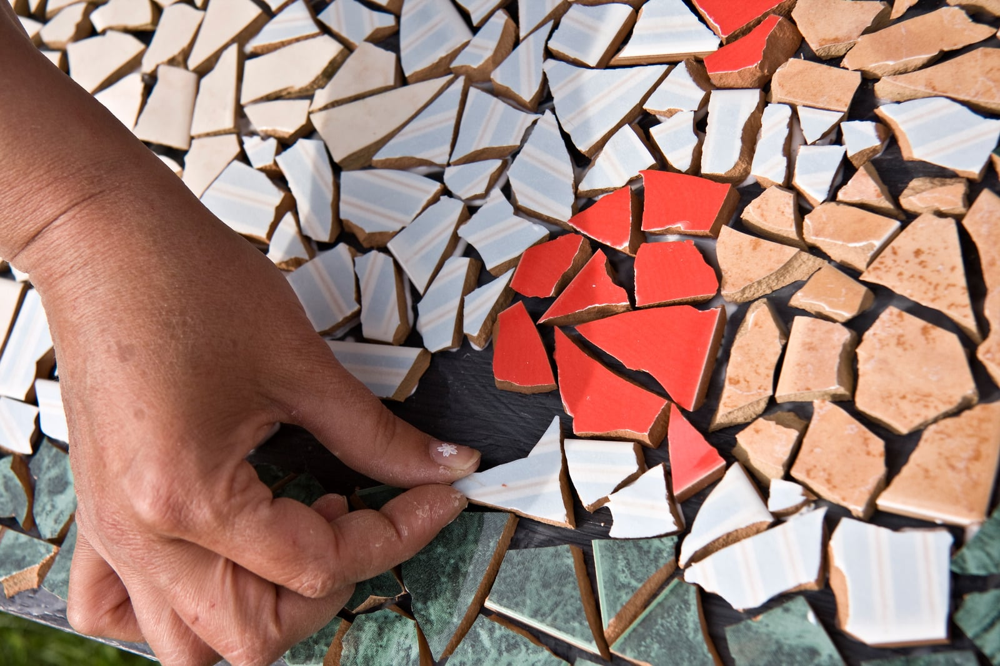

02 — služba
psychoterapie
proces, vztah, čas. co od prvního setkání čekat.

Psychoterapii chápu jako proces poznávání sebe sama ve světě, a integraci toho, co zažíváme, ze které přirozeně vzniká změna. Ta se děje, pokud má pro sebe dobré podmínky, a to v kontextu psychoterapie znamená především půdu pevného terapeutického vztahu a také potřebný čas. Terapie bývá dlouhodobějším procesem. Současně vnímám psychoterapii jako prostor, ve kterém se dá bezpečně prožít, zpracovat a také se učit.
Na prvním setkání domlouváme společnou zakázku — o co nám v terapii půjde, kam směřujeme. Domlouváme četnost setkání, frekvenci a další podmínky spolupráce. Podepisujeme kontrakt, který vše domluvené shrnuje.
Pokud máte otázky nebo si chcete ověřit mou aktuální kapacitu, napište mi.
V současnosti poskytuji terapii v Terapeutickém přístavu v Praze.